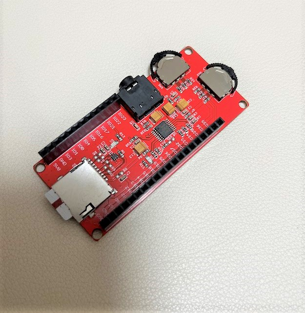
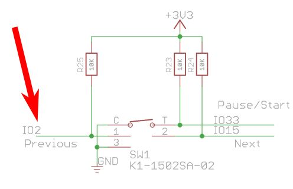

この記事はMakerfabsの提供でお届けします。
今回紹介するMakePython Audio ExpansionはMakerfabsから提供いただいたものです。
（ですが、MakePython Audio ExpansionはMakerfabsをレビューしたい！と言ったのは自分なので、Makerfabsが無理やりこの商品を押しているわけではなく、inajobの一押しアイテム！、という感じです。）
MakePython Audio Expansionとは
[以前レビューしたMakePython ESP32 Color LCD](../../post/高解像度液晶付きのESP32開発ボードMakePython ESP32 Color LCD) や MakePython ESP32と組み合わせて利用することで、オーディオガジェットを作ることが出来る拡張ボードです。
- オーディオDACのUDA1334ATS
- 2つのジョグダイアル
- Micro SDカードスロット
- オーディオジャック

MP3プレイヤーを動かしてみる
このモジュールは公式にはMakePython ESP32用のサンプルプログラムしか存在しなくて、MakePython ESP32 Color LCD向けのプログラムは存在していません。
そこでGitHubを探してみると以下のプログラムを発見しました。
https://github.com/VolosR/MakePythonLCDMP3
これはMakePython ESP32 Color LCDとMakePython Audio Expansionを組み合わせて動作するMP3プレーヤーのプログラムです。
しかし、このプログラム、意外と一筋縄では動きませんでした。
メモ的に変更点を列挙すると・・
Arduino IDEにインポートするライブラリが自明ではない
このプログラムはArduino IDEでビルドする事を前提として作られているため、依存するライブラリについては、自分で個別にインストールする必要があります。 （これはArduino IDEの良くないところで、Platformioなどを使うとライブラリも管理出来て便利だと考えています）
-
SPI_eTFT 2.5.0(最新)
- 設定が必要（後述）
-
https://github.com/schreibfaul1/ESP32-audioI2S
- Audioという名前でライブラリマネージャを検索して出てくるライブラリではないので注意
- こちらはライブラリマネージャにないのでGitHubからZIPファイルをダウンロードしてインストールする
SPI_eTFTの設定
SPI_eTFTの設定は、インストールしたライブラリのファイルを直接書き換える方法により行います（もっと行儀のよい方法があれば教えてほしいです・・）
User_Setup_Select.hの以下の行のコメントを外す
#include <User_Setups/Setup24_ST7789.h> // Setup file for DSTIKE/ESP32/ESP8266 configured for ST7789 240 x 240
User_Setup.hのピンの設定を以下のように編集する
// ###### EDIT THE PIN NUMBERS IN THE LINES FOLLOWING TO SUIT YOUR ESP8266 SETUP ######
// For NodeMCU - use pin numbers in the form PIN_Dx where Dx is the NodeMCU pin designation
#define TFT_CS PIN_D8 // Chip select control pin D8
#define TFT_DC PIN_D3 // Data Command control pin
#define TFT_RST PIN_D4 // Reset pin (could connect to NodeMCU RST, see next line)
MakePythonLCDMP3のソースコードを修正する
これは、おそらくMakePython ESP32 Color LCDの個体差によるものと思うのですが、私の手元にあるボードだと、ディスプレイの向きとオフセット、色が想定と違うようで、ディスプレイのずれた位置におかしな表示がされてしまいます。
以下のようにソースコードを修正することで、正しい表示となりました。
setup()に以下の2行を追記します
Serial.begin(115200);
tft.init();
tft.invertDisplay(1); // 追記する。色がおかしい問題の修正
tft.setRotation(3); // 追記する。向き・オフセットがおかしい問題の修正
tft.setSwapBytes(true);
書き込みの際はMakePython Audio Expansionを外す
MakePython ESP32 Color LCDについている書き込みモード切替のスイッチである「Flash」はESP32のIO0とつながっており、これを押しながらRSTボタンを押すことで、シリアルブートローダーに入れるようになっていますが、この時IO2はGNDかハイインピーダンスである必要があるのですが、MakePython Audio ExpansionはIO2をプルアップしてしまっています。

そのため、プログラムを書き込む際はMakePython Audio Expansionを外す必要があり、しばらくこれに気付かずハマりました。
まとめ
MakePython Audio ExpansionとMakePython ESP32 Color LCDを使うと、簡単にかっこいいMP3プレイヤーを作ることが出来ました。 オープンソースのプログラムなので、ここから見た目をさらに良くしたり、自分の必要な機能を実装することもできそうです。


関連記事